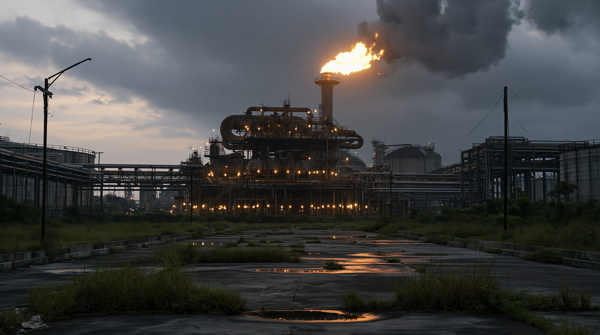
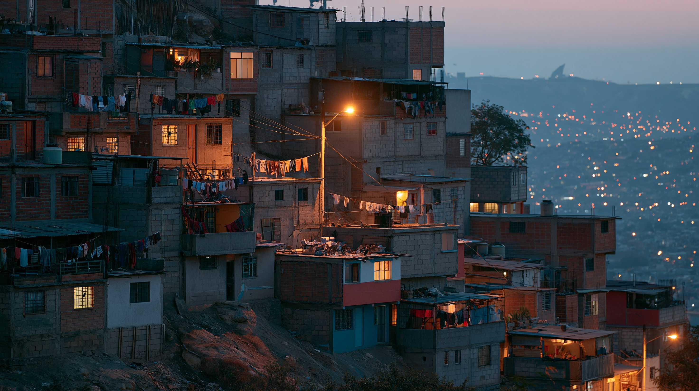
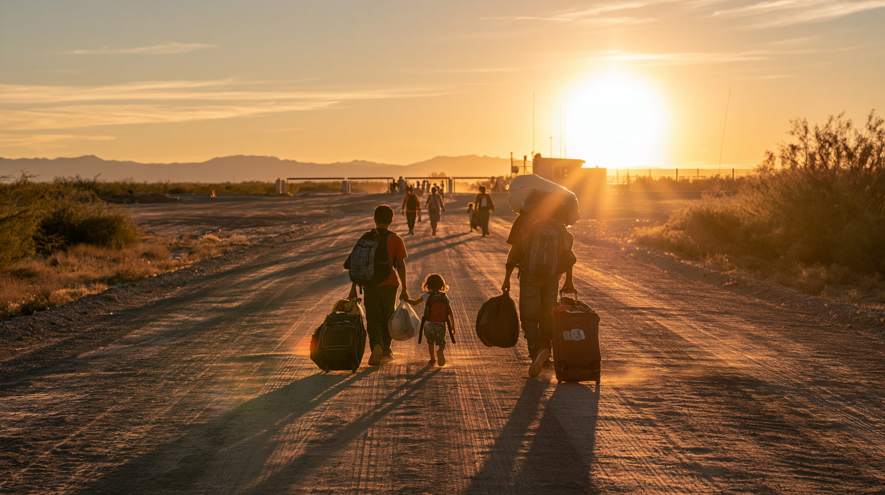

01論点 — 力の行使と、それを止められなかった地域
2026年1月2日の深夜から3日の未明にかけて、アメリカ軍はベネズエラの首都カラカスを含む複数の地点を空爆した。同じ夜、特殊部隊が大統領ニコラス・マドゥロと妻シリア・フローレスを拘束し、海上の艦艇へ移送する。二人はその後ニューヨークへ運ばれ、1月5日にマンハッタンの連邦地裁で麻薬テロ・武器などの罪状について無罪を主張した。
アメリカ国務省と司法省は、これを「戦争」とは呼んでいない。2020年3月に司法省がマドゥロを麻薬テロ容疑で起訴しており、今回はその法執行の完遂である、という立場をとる。1月5日には副大統領だったデルシー・ロドリゲスが暫定大統領に就任し、トランプ大統領は「安全で適切な移行ができるまで、我々がこの国を運営する」と述べた。
国連事務総長は軍事作戦において国際法の規則が尊重されなかったと懸念を表明し、中国とロシアも法的根拠を欠くと非難した。しかし——ここがこの記事の主題なのだが——当のラテンアメリカは、この件について一つの声を持てなかった。中南米カリブ海諸国共同体（CELAC）の緊急会合は、非難声明を出せないまま終わっている。
現職の大統領が他国の軍に連れ去られ、隣国はそれを止められなかった。8か月が経ったいま、ラテンアメリカはなぜ、一つの声で反対することができなかったのか。
3つの論点
「戦争ではない」という位置づけ
起訴が6年前に済んでいたことで、武力行使は「法執行」として語られた。宣戦布告も安保理決議も要らないというこの論法が、実際に何を可能にしたのか。
割れた地域
ブラジル・メキシコ・コロンビア・チリは強く非難した。一方でアルゼンチンら10か国が地域としての非難声明を阻んだ。分裂は偶然ではなく、構造から来ている。
埋蔵量世界1位という賞品
ベネズエラの確認原油埋蔵量は3,030億バレルで世界最大。ただし動機と結果は切り分けて考える必要がある。掘られていない資源は、それだけでは力にならない。
用語解説
モンロー主義
1823年、アメリカ大統領ジェームズ・モンローが議会への教書で示した原則。西半球への欧州列強の干渉を認めないと宣言した。以後、アメリカが中南米への関与を正当化する枠組みとして繰り返し援用されてきた。
トランプ系論（Donroe Doctrine）
モンロー主義の現代版として、トランプ政権が掲げる西半球への介入原則。国防総省は「トランプ帰結（Trump Corollary）」として、麻薬カルテルとの戦いに中南米各国を動員する枠組みに位置づけている。
CELAC（中南米カリブ海諸国共同体）
2011年に発足した、アメリカとカナダを含まない中南米・カリブ海33か国の地域機構。今回の緊急会合では非難声明の合意に至らず、地域統合の枠組みとしての脆さが露呈した。
Operation Southern Spear
2025年9月に始まった、カリブ海と東太平洋で麻薬密輸船とされる小型船を攻撃するアメリカ軍の作戦。人権団体ワシントン・ラテンアメリカ問題事務所（WOLA）は2026年7月時点で221人が死亡したと報告している。
外国テロ組織指定
アメリカ政府が特定の組織をテロ組織として指定する制度。トランプ政権は中南米の犯罪組織およそ20団体をこの枠に入れ、軍事的な対処を正当化する根拠として用いてきた。
PDVSA（ベネズエラ石油公社）
ベネズエラの国営石油会社。外国企業との合弁事業を通じて生産を行う。長年の投資不足と制裁で生産能力が落ち込み、埋蔵量に見合わない産油量にとどまってきた。

争われているのは、この設備の下に眠るものだ。埋蔵量は世界一でも、掘り出す装置は長い投資不足のなかで錆びていった。埋蔵量と生産量の落差こそが、この国の政治を規定してきた。※イメージ画像（生成AI）
02タイムライン — 200年の原則が、6年の起訴状と結びつくまで
1823年12月
モンロー宣言 — 「西半球への干渉を認めない」
アメリカ大統領ジェームズ・モンローが議会への教書で、欧州列強による西半球への干渉を拒否する原則を示した。当初は独立したばかりの中南米諸国を欧州の再植民地化から守る主張だったが、のちにアメリカ自身の関与を正当化する根拠へと転じていく。
欧州の干渉を拒否
のちに介入の根拠へ
1989年12月
パナマ侵攻 — ノリエガを拘束し、アメリカの法廷へ
アメリカ軍がパナマに侵攻し、実権を握っていたマヌエル・ノリエガを拘束。麻薬取引の容疑でフロリダの連邦裁判所に立たせた。他国の指導者を軍事力で連行し、自国の刑事司法にかけるという形の、今回に直接つながる唯一の前例である。
麻薬容疑での連行
37年前の先例
2020年3月
アメリカ司法省がマドゥロを起訴 — 6年後の作戦の土台
司法省がマドゥロを麻薬テロ、麻薬密輸、武器関連の容疑で起訴した。この時点では執行の見通しはなかったが、この起訴状の存在が、2026年の軍事作戦を「戦争」ではなく「法執行」と呼ぶための土台になる。
麻薬テロで起訴
法執行という枠組み
2024年7月
大統領選挙 — 二つの「勝利宣言」
大統領選挙が行われ、マドゥロが続投を宣言。一方、野党側はエドムンド・ゴンサレス・ウルティアの勝利を主張した。選挙結果をめぐる対立は決着せず、ゴンサレスは国外へ出る。国内の正統性の空白が、その後の展開の前提となった。
結果をめぐる対立
正統性の空白
2025年9月
Operation Southern Spear 開始 — 海上での攻撃が始まる
カリブ海と東太平洋で、麻薬密輸船とされる小型船へのアメリカ軍の攻撃が始まった。乗員は多くの場合身元が特定されないまま死亡している。国際法の専門家からは、武力紛争が存在しない以上これは人権法の問題であり、超法規的処刑にあたるという批判が相次いだ。
小型船への攻撃
国際法上の批判
2025年10月
マリア・コリナ・マチャドにノーベル平和賞
ベネズエラの野党指導者マリア・コリナ・マチャドがノーベル平和賞を受賞。国内の民主化運動の象徴として国際的な地位を得た。のちに彼女はこの賞をトランプ大統領に贈るが、それが自身の帰国を後押しすることにはならなかった。
民主化運動の象徴
賞をトランプへ
2026年1月2〜3日
Operation Absolute Resolve — 空爆と、大統領の連行
アメリカ軍がカラカスを含む複数地点を空爆し、特殊部隊がマドゥロと妻シリア・フローレスを拘束した。トランプ大統領はアメリカ側に死傷者はなかったと述べている。二人は海上の艦艇を経てニューヨークへ移送され、1月5日にマンハッタンの連邦地裁で罪状認否に臨み、いずれも無罪を主張した。
空爆と特殊部隊
ニューヨークで罪状認否
2026年1月5〜9日
暫定政権の発足、CELACの不調、キューバ封鎖
副大統領だったデルシー・ロドリゲスが暫定大統領に就任。国連安保理はベネズエラとコロンビアの要請で緊急会合を開いた。一方、CELACの緊急会合はアルゼンチンら10か国が阻んで非難声明に至らなかった。同じ月、アメリカはキューバへの燃料封鎖に踏み切る。
地域は合意できず
キューバ燃料封鎖
2026年3〜8月
石油、地震、そして移行協議
3月にはシェブロンとシェルが、マドゥロ拘束後初となる大型の生産契約に向けた協議に入った。6月には大規模な地震が起き、6,000人を超える死者を出した。7月、WOLAは海上攻撃による死者を221人と報告。8月、アメリカが後押しする移行協議が始まったが、マチャドはそこにいない。
石油メジャーの参入
マチャド不在の移行協議

首都を見下ろす丘には、これらの出来事の下でも変わらず生活が続いている。790万人がすでに国を出た一方、残った人々にとって政変は日々の物価と燃料と食料の問題として現れる。※イメージ画像（生成AI）
036つの視点 — 同じ出来事を、誰がどう呼んだか
この作戦を「法執行」と呼ぶ者と「侵略」と呼ぶ者がいる。歓迎したのに蚊帳の外に置かれた者もいれば、非難しながら実利を守らねばならない者もいる。6つの立場を、それぞれの言い分のまま並べる。
「これは戦争ではない。2020年に起訴した容疑の、法執行の完遂だ」
核心的主張
国務省と司法省は、今回の作戦を武力行使ではなく長年の法執行の完了と位置づける。麻薬テロ組織の指定と6年前の起訴状があれば、宣戦布告も安保理の授権も不要だという論法である。トランプ大統領は移行が終わるまで「我々が国を運営する」と述べ、モンロー主義の現代版を公然と掲げた。
最大の関心：麻薬流入の遮断という国内向けの成果と、西半球における影響力の再確立。
— 力で決着をつけた側
「国家の連続性を保ちながら、移行を進める責任がある」
核心的主張
マドゥロ政権で副大統領を務めたデルシー・ロドリゲスが、その政権を倒した側の後ろ盾を得て暫定大統領に就いた。倒された体制のナンバー2が移行を仕切るという構図であり、旧与党の支持基盤とアメリカの要求の双方をつなぎ止める役割を負う。左派からは、ワシントンが認めた顔ぶれだけの協議だという不信が向けられている。
最大の関心：体制の崩壊を避けつつ、自らが移行後も残る余地を確保すること。
— 敵の副官が残った
「近いうちに必ず帰国する」
核心的主張
ノーベル平和賞受賞者であり、マドゥロ体制の打倒を最も強く求めてきた側。だが8月に始まった移行協議に彼女はいない。受賞した賞をトランプ大統領に贈っても帰国は実現せず、ワシントンが彼女の復帰を望んでいないという見方も出ている（アメリカ政府は否定）。介入を最も歓迎した勢力が、その結果からは外されている。
最大の関心：自由で公正な選挙の実施と、自らの政治的復権。
— 望んだのに外された
「越えてはならない一線を越えた」
核心的主張
ルラ大統領は、ベネズエラ領内への爆撃と大統領の拘束が「許容できない一線を越えた」と述べ、これが「暴力と混乱の世界、最強者の法が多国間主義に優越する世界」への第一歩になりうると警告した。3月にはコロンビアでの首脳会議で、旧植民地に対する植民地主義的な手法の復活だと批判している。
最大の関心：多国間主義の枠組みを守り、地域が大国の裁量に委ねられる前例を作らせないこと。
— 多国間主義の擁護
「隣国が受けているのは、社会的・経済的な絞殺だ」
核心的主張
ペトロ大統領は介入を強く非難し、7月末には封鎖下のキューバを訪問して実情を確かめると表明した。だが8月7日、トランプ大統領が支持したデ・ラ・エスプリエジャが新大統領に就任する。新政権はキューバとニカラグアとの断交を掲げており、この国は数日のうちに立場が反転する。地域の分裂を、一国のなかで凝縮して示している。
最大の関心：対米関係の再構築と、国内の治安・麻薬問題での主導権。
— 数日で反転する国
「主権国家に対する公然たる武力の行使であり、国際法の重大な違反だ」
核心的主張
北京は作戦を明確に非難した。同時に、ベネズエラに対して抱えるおよそ100億ドルの債権が宙に浮いている。国内のSNSでは「台湾でも同じことを」という投稿が広がったが、政府は「台湾は中国の内政であり、外部の干渉を許さない」として、両者はまったく別のカテゴリだという線を引いた。
最大の関心：債権の回収と原油調達の維持、そしてこの前例が台湾問題に転用されないこと。
— 非難と実利のあいだ
| 立場 | 基本スタンス | 最大の主張 | 最大の関心事 |
|---|
| アメリカ | 力で決着をつけた側 | 戦争ではなく、起訴済み容疑の法執行である | 麻薬流入の遮断と西半球での影響力の再確立 |
| ベネズエラ暫定政権 | 敵の副官が残った | 国家の連続性を保ちながら移行を進める | 体制崩壊の回避と、自らの残存余地 |
| ベネズエラ野党（マチャド） | 望んだのに外された | 自由で公正な選挙が実現されなければならない | 帰国と政治的復権 |
| ブラジル | 多国間主義の擁護 | 越えてはならない一線が越えられた | 最強者の法が前例になることを防ぐ |
| コロンビア | 数日で反転する国 | （現政権）封鎖は隣国への絞殺である | 対米関係の再構築と国内治安の主導権 |
| 中国 | 非難と実利のあいだ | 主権侵害だが、台湾問題とは別のカテゴリだ | 投資・債権の回収と、前例の転用阻止 |
CELACの緊急会合は、非難声明を出さないまま終わった。33か国が名を連ねる地域機構が、域内で起きた最大級の出来事について一つの文章も作れなかったという事実そのものが、この記事の問いである。※イメージ画像（生成AI）
04データ・統計 — 賞品の大きさと、賭け金の小ささ
埋蔵量は世界1位、生産量は21位 — 賞品は掘られないまま置かれていた
ベネズエラの確認原油埋蔵量は世界最大で、2位のサウジアラビアを大きく上回る。しかし2024年の産油量は世界21位、日量約96万バレルにとどまった。資源があることと、それを力に変えられることは別である。
出典：OPEC年次統計報（2024年末時点）／アメリカエネルギー情報局
輸入原油のわずか4パーセント — 中国が非難以上に動けない理由
中国は近年ベネズエラ産原油の輸出の大半を割安で買い取ってきたが、それでも中国の海上原油輸入に占める割合は約4パーセントにすぎない。一方で、およそ100億ドルの債権が現地に残っている。強く非難しながら行動が伴わない理由が、この非対称にある。
出典：ラジオ・フリー・ヨーロッパ／ラジオ・リバティ
3,030億バレル
ベネズエラの確認原油埋蔵量。世界最大で、全世界の約17パーセントにあたる（2024年末時点）
221人
2025年9月以降、カリブ海と東太平洋の小型船への攻撃で死亡した人数（WOLA・2026年7月報告）
790万人
国外へ逃れたベネズエラ人。うち690万人超が中南米・カリブ海域内に滞在している
10か国
CELAC緊急会合で、地域としての非難声明の合意を阻んだ国の数（アルゼンチンほか）
05深掘り — 分裂は、どこから来たのか
起きたことは1月の数日間で完結している。だが問いは、その後の8か月のほうにある。4つの観点から掘り下げる。
① 「戦争ではない」という論法 — 次に要るのは、軍事力ではなく起訴状になる
この作戦の最も重要な設計は、軍事的な部分ではなく法的な部分にある。2020年に起訴を済ませておいたことで、2026年の空爆と拘束は「戦争」ではなく「法執行の完遂」として語れるようになった。宣戦布告も安保理の授権も要らない。国際法の専門家の多くは、武力紛争が存在しない以上これは人権法が適用される場面であり、この論法は成立しないと批判している。だが批判が成立するかどうかと、その論法が実際に機能するかどうかは別の問題だった。この形が定着するなら、次の介入に必要なのは軍事力の増強ではなく、数年前に用意された一通の起訴状になる。
② 地域はなぜ割れたか — 理念ではなく、関税と送金という現実
CELACの分裂は、しばしばイデオロギーの分散として説明される。左派政権は非難し、右派政権は黙認した、という図式である。だがそれだけでは、アルゼンチンら10か国が「非難しない」ではなく「非難させない」という積極的な行動をとったことを説明しきれない。より重い要因は、対米依存の構造そのものにある。中南米の多くの国にとってアメリカは最大の貿易相手であり、在米移民からの送金は国家財政に匹敵する規模を持ち、関税は政権の一存で動く。ここで一国が地域の非難声明に賛成することの代償は、理念の問題ではなく歳入の問題として現れる。CELACが声明を出せなかったのは、地域統合が存在しないからではない。存在する統合が、対米依存の前では機能しないことが可視化されたのである。
③ 石油は誰のものになったか — 権益の移動と、その不安定さ
3月、シェブロンとシェルがマドゥロ拘束後初となる大型の生産契約に向けた協議に入った。シェブロンのPDVSAとの合弁事業は2026年上半期に日量約28万バレルを産出し、前の半年から15パーセント増えている。一方、ロシアが持つ複数の合弁権益と、中国が抱えるおよそ100億ドルの債権の扱いは不透明なままだ。ただし勝者側の足場も強固ではない。シェブロンのベネズエラ事業はアメリカ財務省のライセンスの上に成り立っており、外交方針が変われば予告なく条件が変わりうる。埋蔵量が動いたというより、埋蔵量をめぐる不確実性の担い手が入れ替わった、と見るほうが正確だろう。
④ 前例は輸出されるか — 中国が自ら引いた線
作戦の直後、中国のSNSではマドゥロに関する投稿が6億5,000万回以上閲覧され、「台湾でも同じようにすべきだ」という声が広がった。だが政府の対応はその逆だった。台湾事務弁公室は作戦を国際法違反として非難したうえで、「台湾は中国の台湾であり、その解決は中国人だけの問題で、外部の干渉を許さない」と述べている。つまり北京は、この件を主権侵害の事例として非難する立場と、台湾を国際法の問題として扱わせない立場を、同時に維持しなければならない。前例が独り歩きしないよう線を引いたのは、他ならぬ中国自身だった。専門家の多くも、今回の作戦が台湾をめぐる中国の判断に直接的な影響を与えるとは見ていない。
1月に起きたことは、力の行使としては数日で終わっている。だがその後の8か月が示したのは、力の行使そのものよりも、それに対して地域が集団としての声を持てなかったという事実のほうが持続的な意味を持つ、ということだった。ブラジルが警告した「最強者の法が多国間主義に優越する世界」は、力を持つ側が押し通すことによってではなく、押し返す側が一つにまとまれないことによって近づいてくる。8月7日にコロンビアの政権が交代すれば、地域の勢力図はさらに動く。問われているのはベネズエラの行方だけではない。

国連難民高等弁務官事務所の2026年の調査では、域内に暮らすベネズエラ人の3分の1が帰国を検討しうると答えた。政変の帰結は、最終的にこの人々がどちらへ歩くかとして現れる。※イメージ画像（生成AI）